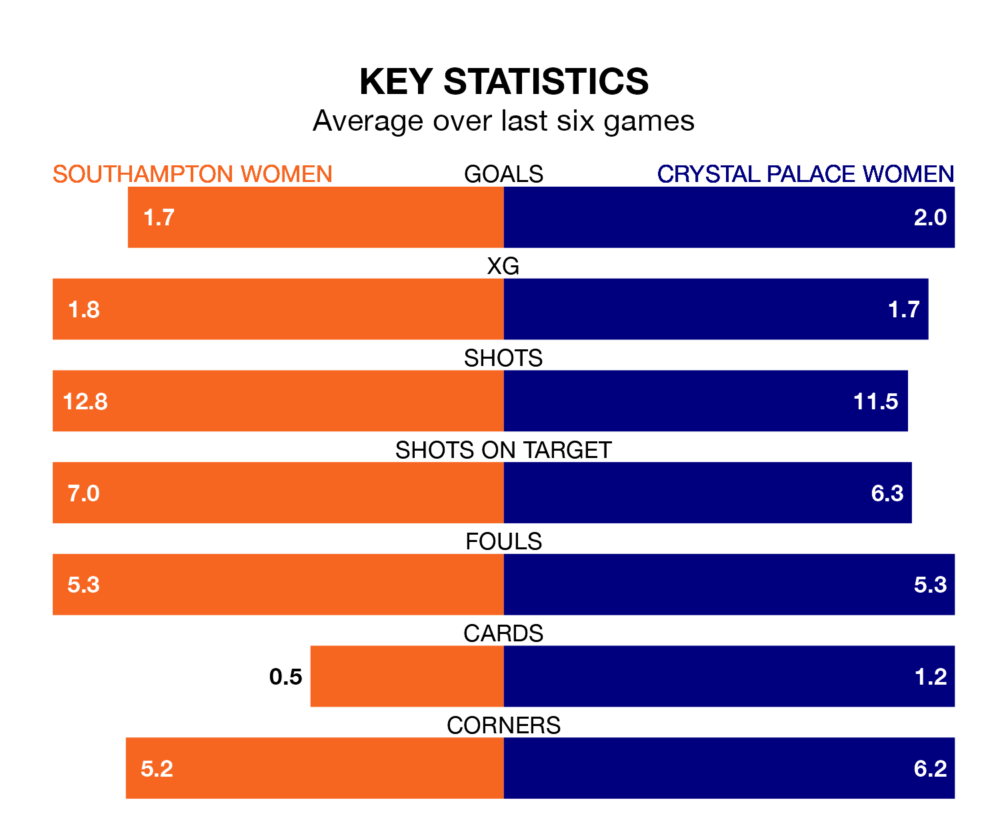

Sunday's early match between Southampton Women and Crystal Palace Women promises to be one for the neutrals, as two of the FA Women's Championship's most free-scoring sides go head-to-head.
Ahead of the game at St. Mary's, the Saints and Crystal Palace sit second and top in the goal-scoring charts, with 25 and 37 goals respectively.
Midfielder Sophia Pharoah leads the way for the home side, having bagged six goals in their 14 games to date.
And Elise Hughes has been the main man in the opponents' penalty box for Crystal Palace, with 13 goals.
Crystal Palace's Felicity Gibbons is the league's most creative player, racking up eight assists in 10 appearances so far this season.
For Southampton, Katie Wilkinson has set up the most goals, having laid on four assists in 14 games.
The Saints are third in the table after 14 games, of which they have won nine and lost five, earning 27 points.
The away team are two places behind the hosts in fifth, with seven wins and three draws putting them on 24 points.
Southampton are in reasonable form in the FA Women's Championship, with four wins and two losses from their last six games.
With three wins and a draw over that period, Crystal Palace's form is slightly worse – they have taken 10 points from 18, compared to Southampton's 12.
In the last three years, Southampton and Crystal Palace have played each other on three occasions. Southampton won all of them.
Their last meeting was on November 19, when Southampton won 4-3 away.
Southampton's last match was on January 28, a 1-0 win against Sheffield United Women, with Wilkinson getting the goal for the Saints.
Crystal Palace lost 1-0 against Charlton Athletic Women last time out, also on January 28.
Updated: 15:45 (UTC), 02/02/24